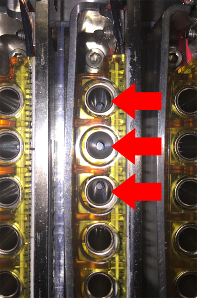

Fusion Thermocycler Bank Removal and Replacement

|
Note—A Firmware Installation procedure must be performed when replacing a module or PCB. |
Parts and Materials Required
- FSE Tool Kit
- Bench Top Pads
- Thermocycler Bank
Time Required
- 30 Minutes
Removal Procedure
- Power down the Panther System and PC.
- Remove the Thermocycler from the Fusion and place on a flat work surface.
Refer to the Thermocycler Removal and Replacement procedure.  Remove the six hex screws (2.5 mm driver) that secure the metal cover to the thermocycler and set it aside. (2 on top, 2 on right side, 2 on left side.)
Remove the six hex screws (2.5 mm driver) that secure the metal cover to the thermocycler and set it aside. (2 on top, 2 on right side, 2 on left side.)- Remove the bank. In this example, Bank 12 has been removed:
- Remove the two hex screws (2.5 mm driver) that secure the thermocycler bank.
- Gently but firmly lift the bank up and out of the thermocycler. (The PCB is inserted in a slot above the row of banks. Grasp the PCB, front and back edges, carefully between thumb and forefinger with one hand, and pull up gently until free. The banks should slide out with minimal pressure.)


Replacement Procedure
|
|
Caution—When inserting a bank, it is essential to align the thermal block properly with the ends of the fiber optics underneath. If the bank is not aligned properly and the screws are tightened, the fiber optics will be damaged and the entire module would have to be replaced. |
- Re-install the bank in the thermocycler.
- Hold the bank by the PCB in the same way as during the Removal procedure. Carefully set the bank in place over the fiber optics.
- Slowly press down on the bank keeping the bank level. The PCB should seat in the slot, and the thermal blocks should pilot onto the ends of the fiber optics. When properly seated, the bottom of the bank will sit flush against the surface of the heat sink.
IMPORTANT! Visually check the alignment of the fiber optics in the well, they should be centered in the well. The following image is an example of INCORRECT alignment. The arrows are pointing to misaligned fibers.

- When the bank is properly seated and aligned, secure with the two 2.5mm hex screws.
- Re-install the metal cover (reverse Step 3 of the Removal procedure).
- Replace the Thermocycler in the Fusion.
Refer to the Thermocycler Removal and Replacement procedure.
Verification
- Power on the system and PC.
- Set instrument setup as stated in service manual.
For Thermocycler Bank replacement only "IS_Config_SideCar.xml" needs to be run. - Load firmware to the new Thermocycler module. (Time estimate: 30 minutes)
Refer to Panther Fusion System Installation > Run Instrument Setup (Fusion). - Teach the Vial Robot to the Thermocycler module. (Time estimate: 15 minutes)
Refer to Service Procedures > Panther Fusion System Pipettor Teaching. - Perform a Sidecar Pipettor OQ Test. (Time estimate: 10 minutes)
Refer to Service Procedures > Side Car Pipettor OQ Test.- When using SSW 6.x:
- Check Report and Initialize
- Check Cap & Vial
- Enter 10 Cycles
- Select Cap & Vial tray location
- Save report and remove any used partial tray(s) when complete.
- When using SSW 7.x:
- Check Report and Initialize
- Check Cap & Vial
- Single Tray
- Save report and remove any used partial tray(s) when complete.
- When using SSW 6.x:
- Perform cleaning using automated or manual method. (Time estimate: 10 - 30 minutes)
Note—As TC is new from factory, no preliminary ssw scan is required before cleaning/inspection. First clean then perform scan. Repeat if necessary. - Complete a total Auto Clean if Nests are installed: (10 mins)
- Manual Clean with the Camera Inspection (30 mins)
- Perform a Scan (15min)
Note—From Fusion-System tab, Initialize System.
(This minimizes TC heatsink bug)- PantherMain Background Scan = Pass
- Background Scan = Pass
- PEEK scan = Pass
- Perform either A or B
- Monitor customer calls and controls on subsequent runs.
- Paraflu PQ Performance Qualification
 button at the top of the page to send feedback, comments, or change requests.
button at the top of the page to send feedback, comments, or change requests.